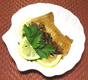

|
Skate Wings with CapersFrance | ||||
| Serves: Effort: Sched: DoAhead: |
4 fish *** 1-1/4 hrs Prep |
An excellent, intensely flavorful fish course for a multi-course dinner - easy to make (once you've skinned and filleted the wings). The wings are tender and shred apart easily using just a fork. | |||
|
|
4 ar 1-1/2 ------ 2 1 2-1/2 1 2-1/2 1 1/4 1/8 ------ |
T --- oz oz T T T T t t --- |
Skate Wings (1) Flour Oil -- Sauce Red Bell Pepper Shallot Capers Parsley Butter Lemon Juice Salt Pepper -- Garnish Lemon Wedges Parsley |
Prep - (45 min (15 min if wings are ready))
|